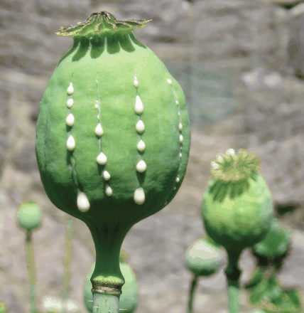

OPIUM
OVERVIEW:
Opium, the parent of heroin and a myriad of other
addictive derivatives, has a long and fascinating history.
Opium has been used for medical, religious, and recreational
purposes, and has been featured in, and used to
inspire,
art, literature, and poetry.
As
an international
commodity,
it has been the focus of regulation, legislation,
even war.
Opium�s
addictive and detrimental effects
have
caused untold suffering
throughout history.
Its ability
to relieve pain has brought untold relief to the injured,
ill,
and dying.
Opium is a naturally occurring narcotic derived
from the annual plant Papaver somniferum, widely
known as the opium poppy. Although readily recognized
in many countries and even celebrated at various
times
and places in history.
the true history
of the drug and the poppy flower tells an intriguing
story
in itself
Opium cultivation and use became especially
prevalent in India and later in China where the Chinese
smoked an opium-tobacco mixture (madak or madhak).
Sometime during the mid-1700s, they began to smoke
pure opium�a habit that spread from the wealthy to the
common people. British merchants, in particular, capitalized
on the Chinese demand for opium. By building
on
their already thriving colonial Indian tea trade, the
merchants readily dominated opium trade with China.
Tensions between Britain and China over the opium
trade eventually resulted in the Opium Wars, two separate
conflicts occurring during 1839�42 and 1856�60.

CHEMICAL/ORGANIC COMPOSITION:
Opium is classified as a narcotic. By definition,
narcotics have analgesic (or painkilling) properties as
well as effects beyond lessening pain, such as producing
euphoria and addiction. Opium has long been valued
for its analgesic effects.
However,
not all analgesics
are
narcotics, because they do not produce these side
effects;
aspirin and Tylenol
are examples of non-narcotic
analgesics.
Raw opium is harvested from the seed pod of the
opium poppy. As many as 50 substances called alkaloids
can then be derived from opium, and the opium can be
further processed. Alkaloids are naturally occurring
plant products that possess some pharmacological activity,
and are found in other plants as well as opium poppies.
Cocaine and nicotine are examples of alkaloids
derived
from the coca plant and the tobacco plant,respectively. Because of their chemical composition,
alkaloids are often used in producing medicines.
The alkaloids derived from opium are collectively
known as opiates. Morphine, codeine, and thebaine are
well-known opium derivatives. Paregoric is an opium
tincture (opium in an alcohol mixture).
EFFECTS
Mental Effects
Opium has been used for centuries for its analgesic
(pain-relieving) properties. The opium derivative morphine
has long been considered the standard narcotic to
which
all pain-relieving drugs are compared. These
narcotics
act on the central nervous system, relieving pain
by
interrupting pain messages in the brain or spinal
cord.
Opiates bind to special receptor sites in different
parts
of the brain and body that are active in transmitting
pain signals.
Opium derivatives also have antitussive effects,
meaning they suppress the cough reflex. Because of this
effect, codeine is a frequently used ingredient in cough
syrups. Opiates also slow digestion by slowing messages
to the smooth muscles and reducing intestinal secretions.
This effect makes them useful in treating diarrhea, but may also lead to constipation, a common problem for
those who abuse opium.
Physiological Effects
Other central nervous effects of opium and its derivatives
include drowsiness, sedation, nausea, weakness,
faintness,
agitation, restlessness, nervousness, and
decreased
sex drive. Users may become very sleepy.
In
some
rare cases, effects
may include delirium and
insomnia.
Long-term narcotic use can lead to addiction,
depression,
difficulty
sleeping or concentrating, agitation,
tremors, seizures, and an increased sensitivity to
pain.
An
extremely dangerous effect
of these drugs is
their
depressive effect
on the respiratory system, which
may
lead to unconsciousness, coma, and sometimes a
rapid
death. Users may also experience mood changes,
euphoria,
dysphoria (feeling unwell or unhappy), mental
cloudiness,
disorientation, or hallucinations.